Activité principale
La boutique de créateurs
Un concept store de dépôt-vente installé à Vichy depuis 10 ans, réunissant une trentaine de créateurs français.
Le concept
Le savoir-faire artisanal français, à l'honneur
Made in France & Marion présente des créations artisanales et artistiques en pièces uniques ou petites séries, réalisées par des créateurs qui travaillent seuls, dans leur atelier, partout en France. Une variété de matières et une relation directe entretenue avec chacun d'eux.
- Environ 30 créateurs présentés en boutique
- Dépôt-vente : pièces uniques et petites séries
- Fabrication dans des ateliers français
- Mise en valeur du savoir-faire artisanal
- Relation directe avec chaque créateur
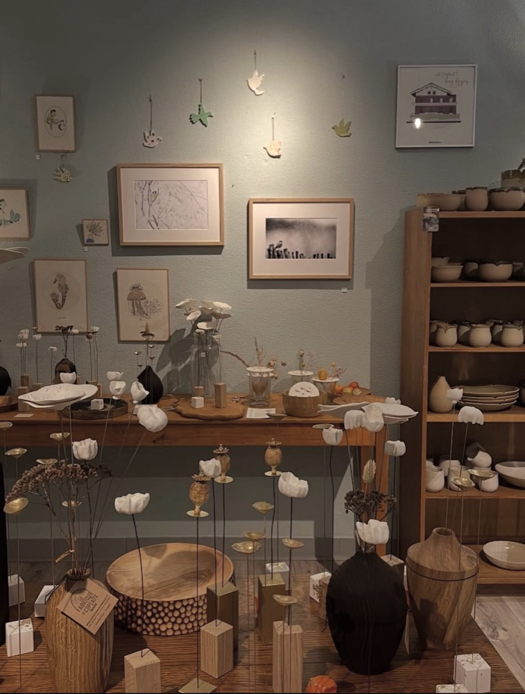
Ce que vous trouverez
Vaisselle, céramique, textile, bijoux…
- Vaisselle & céramique
- Textile
- Décoration
- Savons
- Bijoux
- Accessoires
- Pièces d'artistes
Un aperçu de la boutique
Céramiques, bijoux et créations en images
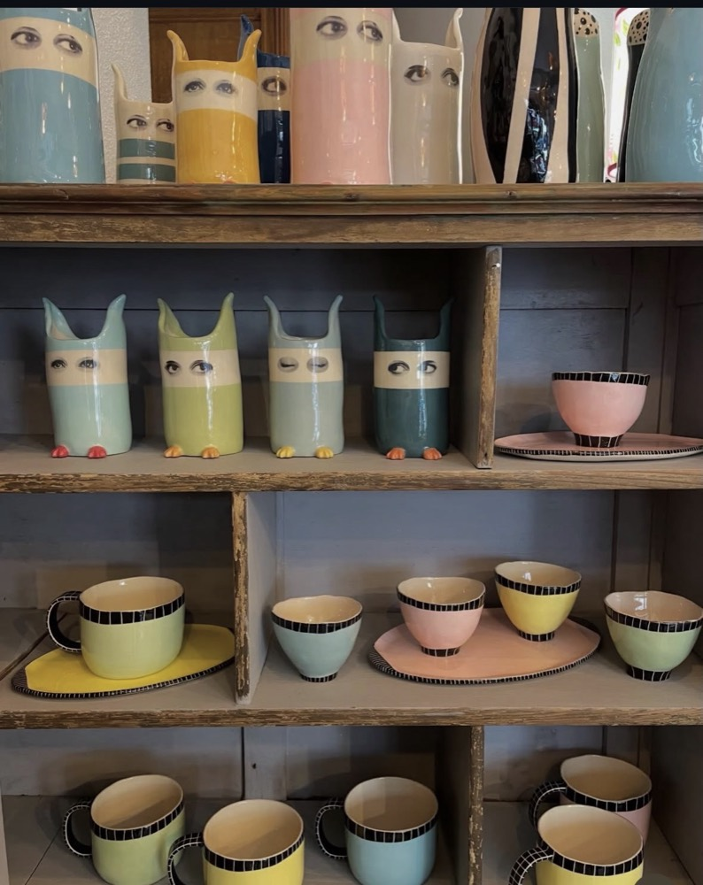
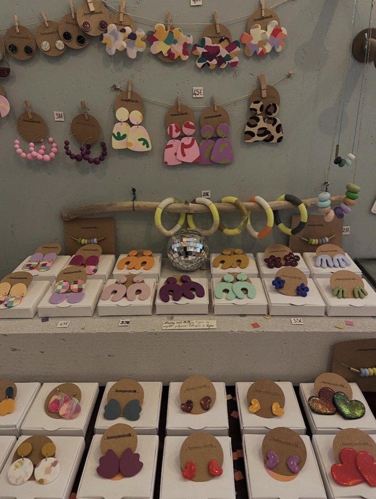
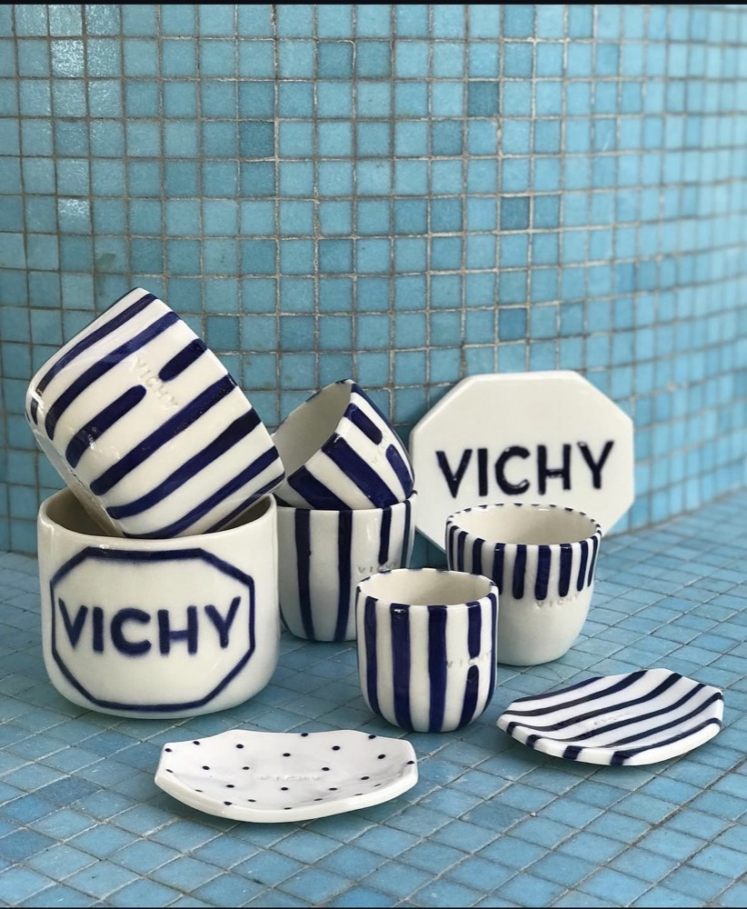
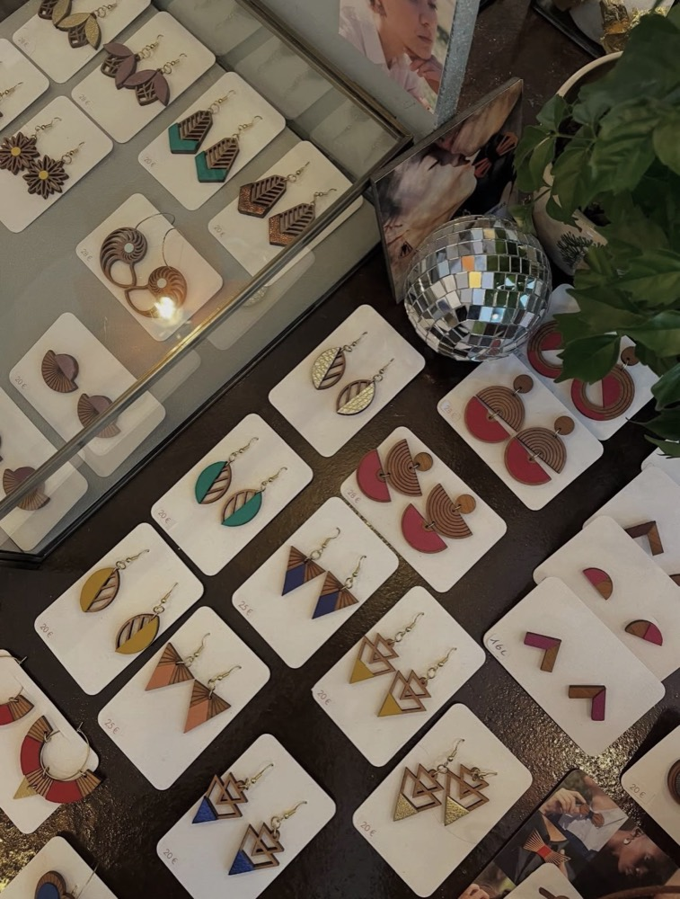
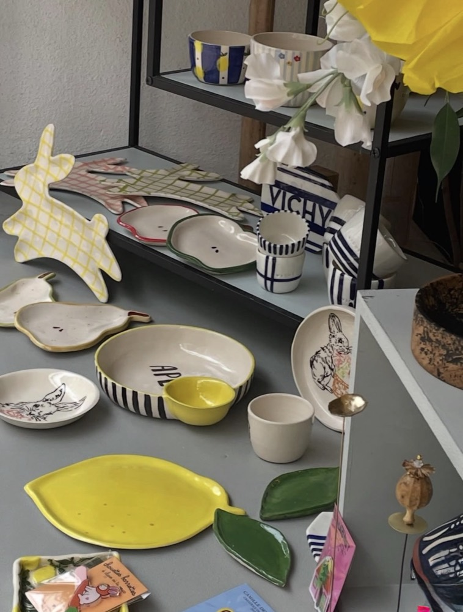
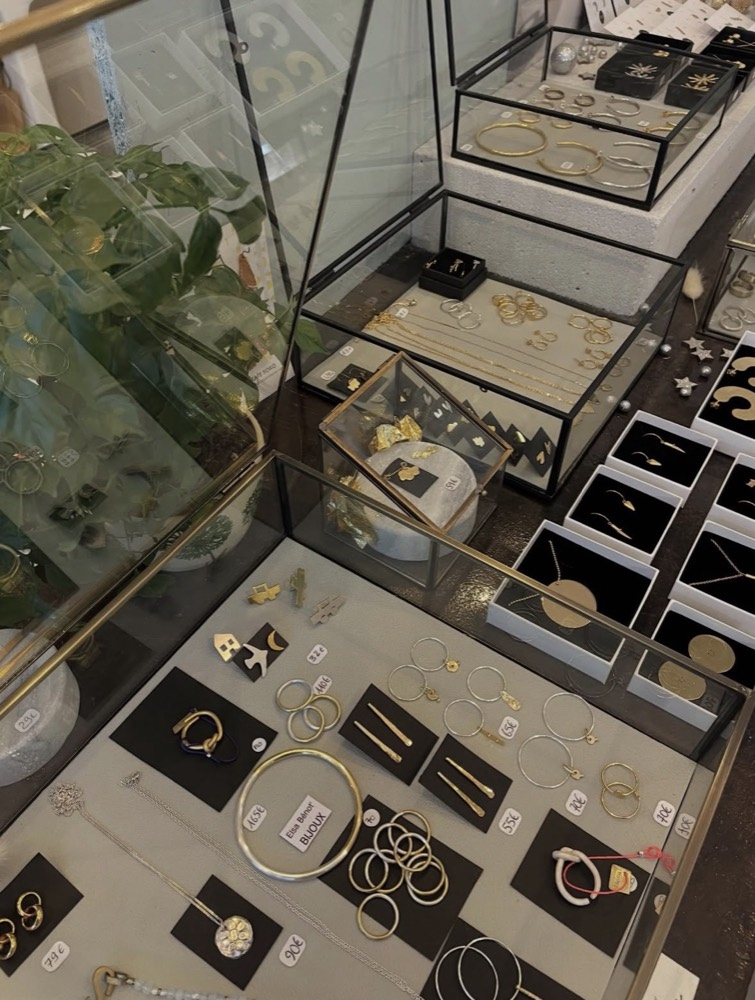
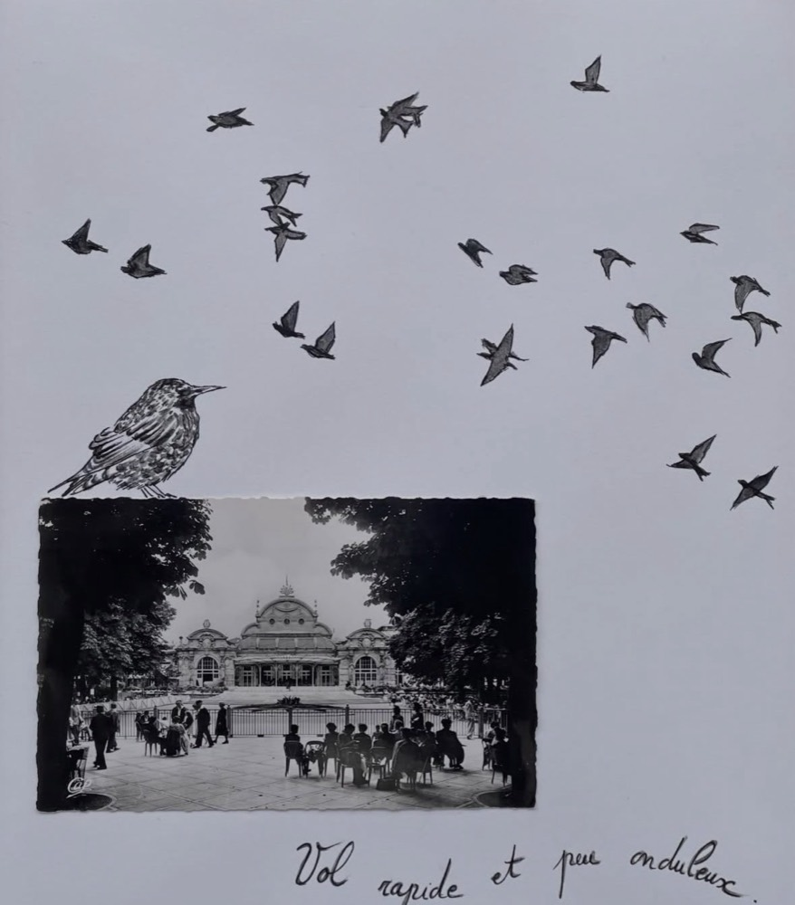
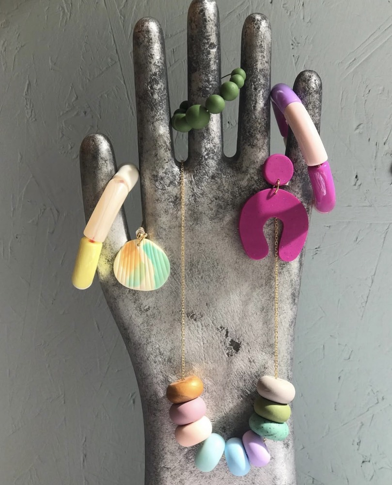
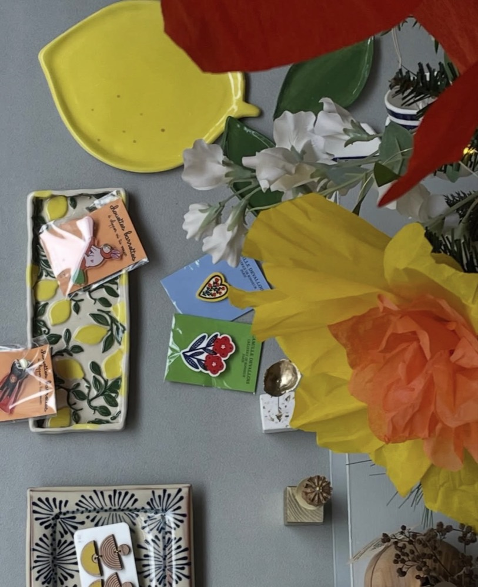
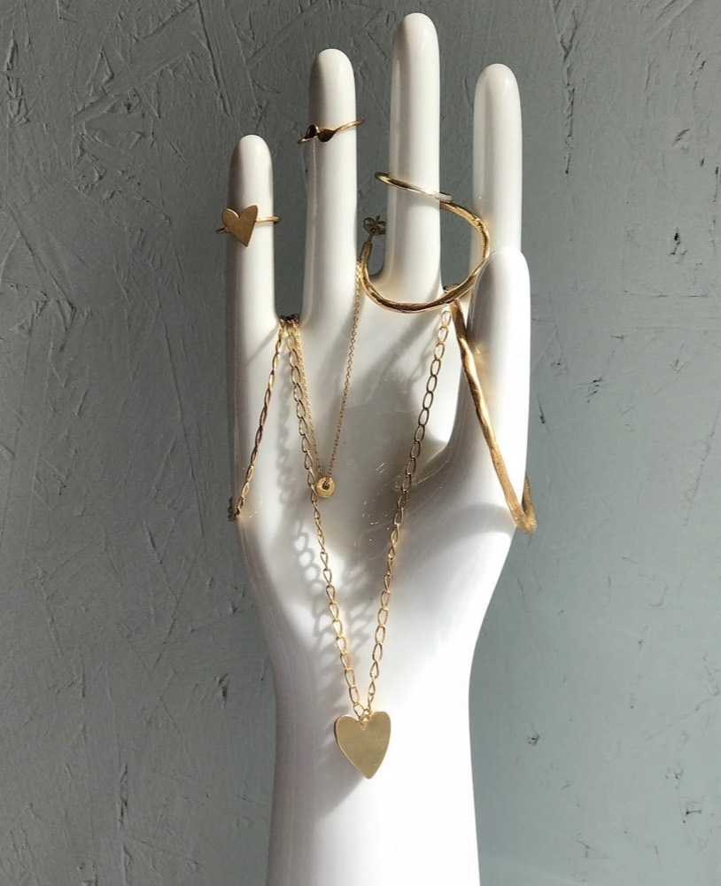
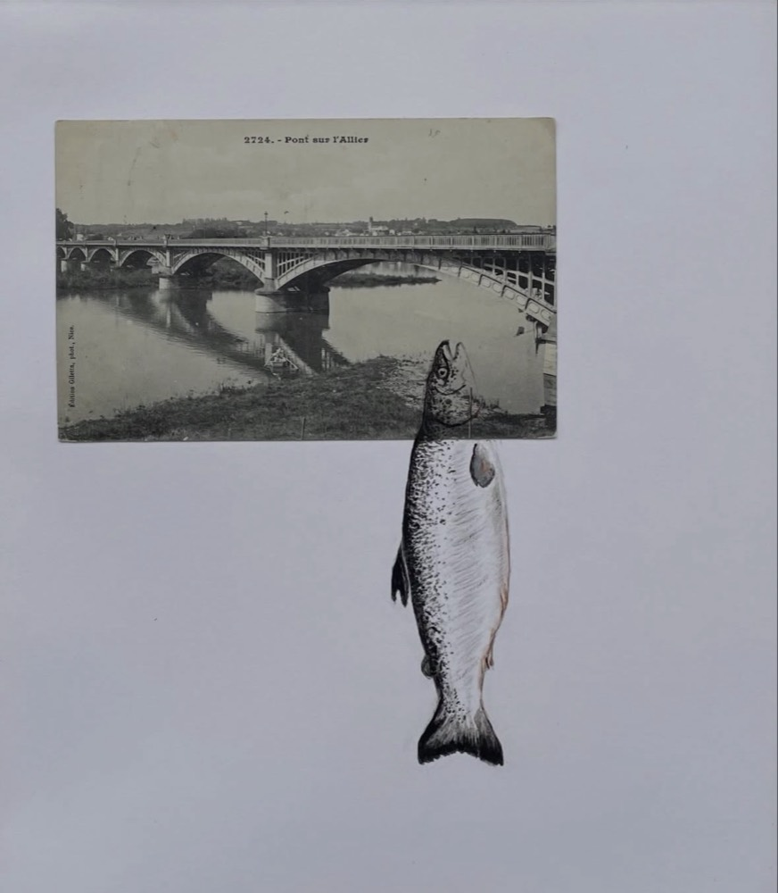